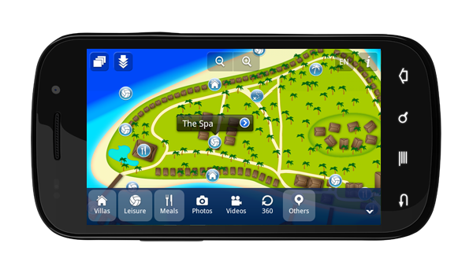
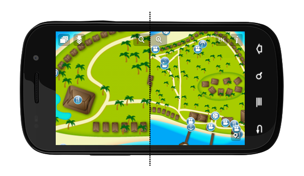

Overview
mAppWidget is a code library designed for rapid design and integration of custom maps for Android mobile apps. We provide the library along with with a set of services to support Android developer in integrating maps into their projects such as example projects and guides. Using the mAppWidget library, developers can quickly go from an image file to an interative map.
mAppWidget makes it easy to add a wide range of features, such as zoom functionality, panning, layers, and objects. We make managing map layers and objects simple by using map pins, which can be made interactive (clickable) and info bubbles that can add annotation to the map.

Using apps developed using mAppWidget is possible without data connection, unlike most of the other solutions. mAppWidget also uses a tiling technique for graphics that generates a larger map byre-using smaller images (tiles). This approach saves RAM and increases real-time performance, which is especially important on mobile devices. Zooming into images is not limited by the resolution of the input map image, as beyond the maximum zoom level of the image, the library uses digital zoom.

Also we've simplified map image slicing into tiles by providing customers access to an online image slicing tool that outputs image resources ready to use in your projects.
Features
- Create map from any image
- Tile engine rendering
- GPS support
- Zoom in/out
- Pinch to zoom gesture
- Zoom on double tap
- Digital zoom
- Pan
- Inertial scroll
- Smooth tiles appearing
- Support of more than one map per application
- Ability to move the map object after it was added to the map
- Add/remove layers
- Add/remove objects
- Click handlers/info bubbles
- Works offline
- External storage support
Requirements
- Android API 7 or higher
- Android OS 2.1 or higher
- Latest JDK, Eclipse recommended